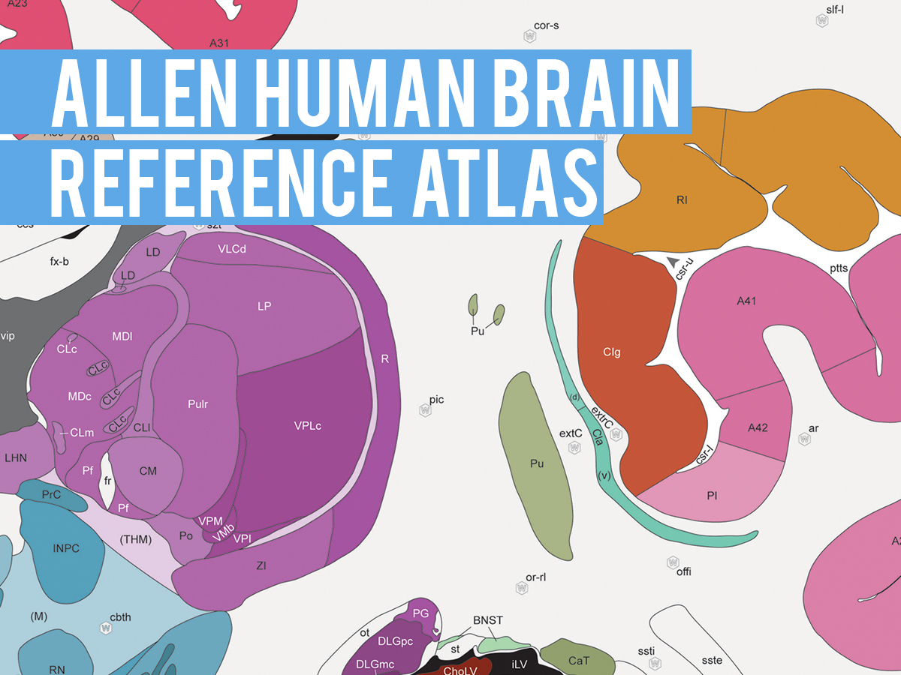

Acknowledgements¶
The authors would like to express their gratitude to the open science initiatives that made this work possible:
The ENIGMA Consortium

The Human Connectome Project

Allen Human Brain Atlas
We would also like to recognise funding support from the Canadian Institutes of Health Research (CIHR) and Fonds de la recherche en santé du Québec (FRQS). Core funding for ENIGMA was provided by the NIH Big Data to Knowledge (BD2K) program under consortium grant U54 EB020403, by the ENIGMA World Aging Center (R56 AG058854), and by the ENIGMA Sex Differences Initiative (R01 MH116147).